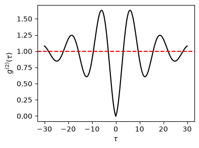

14.1. QME: Theoretical solution#
In this section, we solve the quantum master equation analytically as much as possible and find a closed form expression of the second-order coherence.
14.1.1. Quantum master equation#
Based on the model introduced in Chapter 6 and Chapter 7, the time evolution of the state \(\rho\) follows the quantum master equation
where the system Hamiltonian after the rotating wave approximation is
The master equation is an ordinary differential equation (ODE) of the density operator. It is convenient to write the density operator in a matrix form or a density matrix. and write down the quation of motion for each matrix elements. Using \(|g\rangle\) and \(|e\rangle\) as basis set, we introduce matrix elements: \(\rho_{gg} = \langle g|\rho|g\rangle\), \(\rho_{ee}=\langle e|\rho|e\rangle\), \(\rho_{eg} = \langle e |\rho| g\rangle\), and \(\rho_{ge} = \langle{g}|\rho|e\rangle\). The master equation (14.1) is explicitely written as
Using the normalization condition \(\rho_{gg}+\rho_{ee}=1\) and the Hermitian condition \(\rho_{ge} = \rho^{*}_{eg}\), we can further simplify the equations. Introducing \(Z \equiv \rho_{ee}\), \(X = \equiv \text{Re} \rho_{eg}\) and \(Y \equiv \text{Im}\rho_{ge}\), the matrix elements are given by \(\rho_{gg}=1-Z\), \(\rho_{ee}=Z\), \(\rho_{eg}=X+iY\), and \(\rho_{ge}=X-iY\). Hence, we need to find three real functions \(X(t)\), \(Y(t)\), and \(Z(t)\). Their equations of motion are
Further introducing
The master equation is expressed as simpe linear ODE
whose solution is given by
where \(\mathbf{x}_{ss}\) is the steady state solution. The original form of the quantum master equation looks complicated but it is just a simple linear ODEs.
14.1.2. Steady state solution#
Every solution to the quantum master equations asymptotically approach to a steady state regardless of the initial condition since the every eigenvalue of \(A\) has a negative real part. Since we are interested in the photon counting in a steady state, it is convenient to have an analytical expression of the steady state. Setting \(\frac{d}{dt} \mathbf{x} = 0\) in (14.2) and using the inverse matrix
we obtain the steady state
Going back to the original variables, the steady state density matrix is found to be
Let us look at the solution for a special case. When driving is absent, the system is expected to relax to a thermal state. To simulate it, let \(\Omega=0\). Then, the off-diagonal elements of the steady state density vanishes. The probability of the system being in the excited state also vanishes since no excitation happens without the driving.
14.1.3. Time evolution#
It is possible to derive the time-evolution of the state from Eq. (14.3). Let \(\lambda_{i}\) is the \(i\)-th eigenvalue of \(A\) and \(\mathbf{u}_{i}\) is the corresponding normalized eigenvector. Then, the solution (14.3) can be written as
The actual expression of the eigenvalues and eigenvectors are a bit messy. Here we show simple cases where analytical calculation is tractable.
Resonant fluorescence#
Even when the tuning is perfect (\(\Delta=0\)), the analytical solution is very messy. Here we solve it approximately under the strong driving condition (\(\Omega \gg \gamma\)). Three eigenvalues of \(A\) are
and the corresponding eigenvectors after the approximation are
Note that they are orthonormal assuming \(\left(\frac{\gamma}{\Omega}\right)^2\) is negligibly small.
For the sake of \(g^{(2)}(\tau)\) calculation, let us assume that the system is initially in the ground state, that is \(\mathbf{x}_{0}=0\). After taking strong driving approximation, the steady state becomes
Now substituting all these approximated values into Eq. (14.5), we obtain
The state relaxes to the steady state with decay rate \(\frac{3\gamma}{4}\) and oscillates with the Rabi frequency \(\Omega\).
14.1.4. Second-order coherence#
Once we obtain the time-evolution of state starting from the ground state, we can calculate the second-order coherence easily as discussed in Chapter 12.2. Using the above results, we obtain the second-order coherence under the strong driving as
which shows anti-bunching behavior at \(\tau=0\). Comparing it with the simple thermalization case discussed in {Chapter 12.2, the Rabi oscillation is clearly seen. For demonstration purpose, we have used very strong coupling \(\Omega > \gamma_0\). The following plot shows strong positive correlation near \(\tau = 0\), suggesting strong bunching effect.
import numpy as np
import matplotlib.pyplot as plt
Omega = 0.5
gamma = 0.1
time = np.linspace(0,30,300)
g2 = 1 - np.exp(-3*gamma/4*time)*np.cos(Omega*time)
plt.figure(figsize=(4,3))
plt.plot(time,g2,c='k')
plt.plot(-time,g2,c='k')
plt.axhline(y=1.0,c='r',linestyle='--')
plt.xlabel(r"$\tau$")
plt.ylabel(r"$g^{(2)}(\tau)$")
plt.show()

We need to use numerical methods to see the effect of weak driving and off-resonant cases, which comes in the next section.